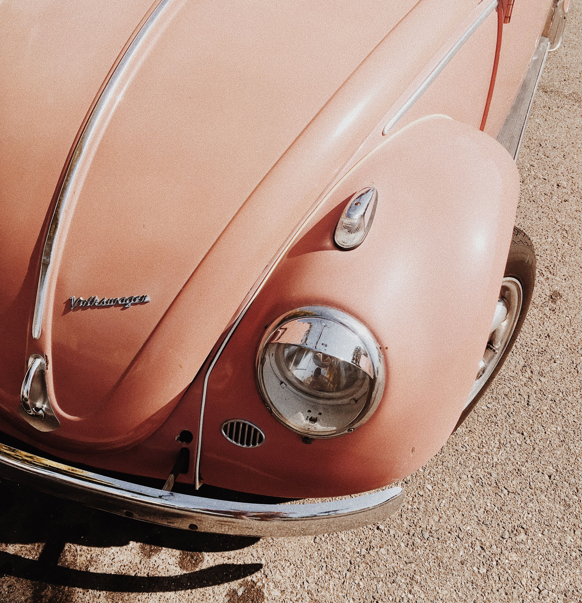
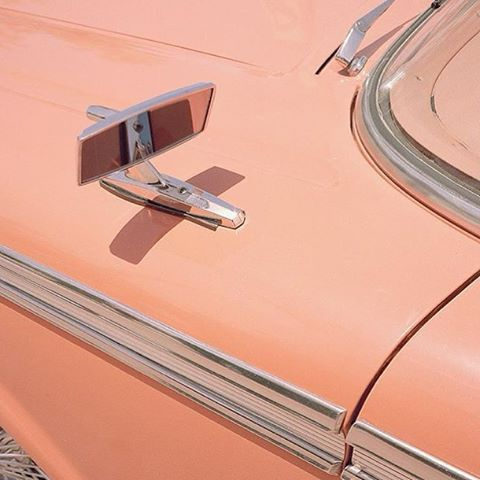
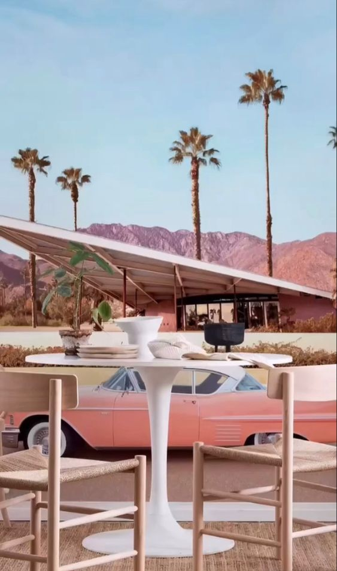

"R & R" De la sapiencia a la invención de un souvenir. EE.UU.
¿Por que seleccionar R&R como la opción número uno, en alquiler de automóviles en Estados Unidos?
Con prioridad en estadisticas y ventas
Según resultados recientes, tanto en ventas como en visitas reiterativas por parte de los
clientes más fieles y otros allegados, se ha destacado verosimilmente, que, R&R
se ha iniciado en los campos de competitividad contemporanea con respecto a la temática
de ejercicios de prestación de servicios a un nicho de mercado generalizado, es decir,
viablemente ha proporcionado idóneos procesos de prestación de servicios con el contexto
de el alquilar autos; Las ventas netas han originado un despliegue del casi 85%, y las
visualizaciónes, opiniones y experiencias en la página web, como en los medio donde
constantemente se desarrolla son medianamente de un 90%. Esto se debe, con excepción, a lo
anterior en mención, a el empirismo impartido mediante los prototipos de automoviles como
ejemplar souvenir, puesto que, reproduce una serie de recuerdos, los cuales posteriormente,
seran resultado de un estimulo positivo, de esta misma forma, la linea laboral, y la eficacia
de estos mismos predispone una asertividad destacable. ¿Dispuesto a poner a prueba a R&R?


